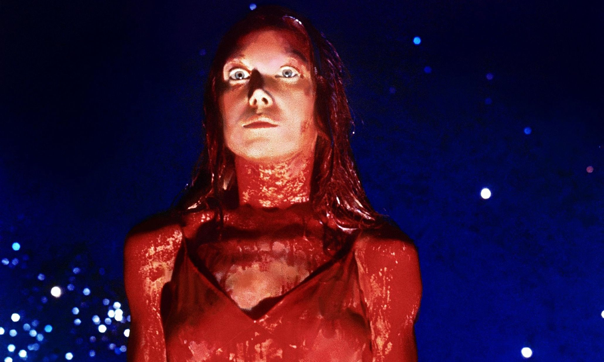

Carrie, a Estranha
Carrie é um romance de terror de 1974 escrito por Stephen King, marcando sua estreia como romancista. O livro foi um grande sucesso e catapultou King ao status de um dos maiores escritores de terror de todos os tempos. A história segue uma jovem com habilidades telecinéticas que é atormentada por colegas de escola e pela própria mãe fanática religiosa, levando a um trágico confronto.
Sinopse
Carrie White é uma adolescente introvertida e atormentada por colegas de escola devido à sua timidez e à sua criação extremamente rígida sob a tutela de sua mãe fanática religiosa. Quando Carrie descobre que possui poderes telecinéticos, sua vida muda drasticamente. Após ser humilhada no baile de formatura, ela usa seus poderes para se vingar de todos aqueles que a atormentaram, desencadeando uma tragédia.
Informações Gerais
| Gênero | Terror, Drama |
|---|---|
| Data de Lançamento | 5 de abril de 1974 |
| Autor | Stephen King |
| Número de Páginas | 199 (edição original) |
| Ambientação | Chamberlain, Maine |
| Principais Personagens | Carrie White, Margaret White, Sue Snell, Tommy Ross, Chris Hargensen |
| Adaptações | Filmes de 1976, 2002 e 2013, Musical de 1988 |